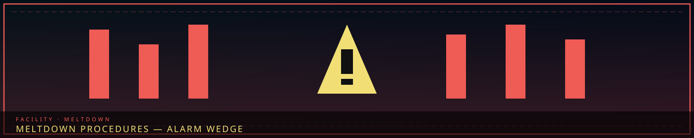
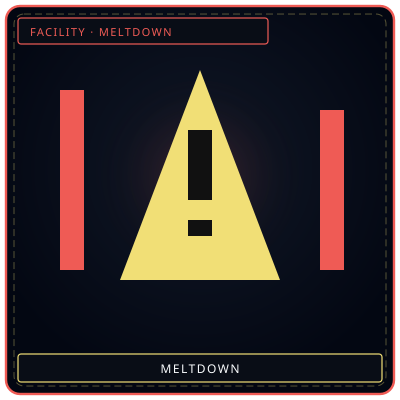
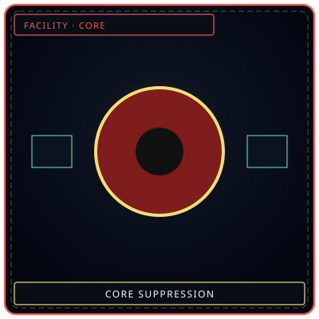
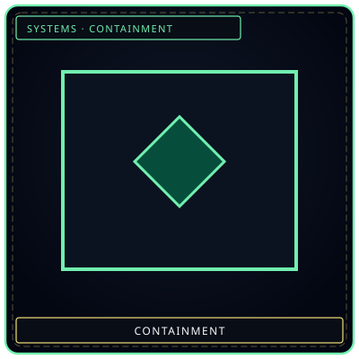

1. Meltdown Phase Overview
A Facility Meltdown occurs when containment failures exceed operational threshold tolerances, causing Han-Flux pressure to destabilize across all 8 floors simultaneously.
When Meltdown Level IV triggers, all non-combat research staff must immediately assemble in Floor 1 Bunkers. Lifts will lock on descent.
2. The Meltdown Response Timeline
| Time Elapsed | System Status | Automated Action | Personnel Instruction |
|---|---|---|---|
| 00:00 - 02:00 | Coherence Cascade | Chamber warning sirens sound | Assign agents to immediate work to clear counters |
| 02:01 - 05:00 | Energy Siphon Overload | Power cuts to non-essential sub-wings | Deploy Floor 7 Shadow Corps to breach sectors |
| 05:01 - 10:00 | Multi-Chamber Rupture | Sub-level bulkheads drop permanently | Lethal suppression authorized with all M.A.W. gear |
| > 10:00 | Core Collapse Imminent | Director Majin executes Absolvohan reset | Brace for Cycle termination sequence |
“A gold wedge among red bars. The alarm is a shape.”


AlarmWedge + bars
CoreWhat failed
LockdownRooms firstWhat each floor does in a meltdown
All eight at once. Han-flux over threshold. Lifts lock on descent. Non-combat staff to Floor 1 bunkers. This is not one Core's dream and not a Tide Watch, though a Tide Watch can cause it.
| Floor | In meltdown | Does not |
|---|---|---|
| 1 | Alarms, bunkers, door orders | Farm cells; press Absolvohan as a ten-minute button |
| 2 | Return breaches; Edge stays a window | Treat the Maw as a cell |
| 3 | Crucibles off unless Dekan still names a piece | Issue Named Vigil as loot |
| 4 | File what failed | Invent a new SECC in the smoke |
| 5 | Hold the wall; log Tide separately | Send Border teams to Insight because the color matched |
| 6 | Seal. Cheongula stays sealed. | Open cylinders “to save them” |
| 7 | Routes that still have a return plan | Unlisted as unofficial |
| 8 | Count who is still coming home | Turn the Gate into disposal |
The old timeline that ended in “Director Majin executes Absolvohan reset” was Cycle paste. Absolvohan lives on the Cycle. A meltdown you cannot hold may become a Cycle problem. It is not a timer on this page. Code Meltdown Level IV is the civilian-evac line on the palm, not a loot phase.
All eight at once. Han-flux over threshold. Lifts lock on descent. Non-combat staff to Floor 1 bunkers. Code Meltdown Level IV is the civilian-evac line on the palm, not a loot phase. The old timeline that ended in “Director Majin executes Absolvohan reset” was Cycle paste. Absolvohan lives on the Cycle. A meltdown you cannot hold may become a Cycle problem. It is not a timer on this page.
Floor 1 runs alarms, bunkers, door orders — it does not farm cells and does not press Absolvohan as a ten-minute button. Floor 2 returns breaches; the Edge stays a window; the Maw is not a cell. Floor 3 turns crucibles off unless Dekan still names a piece; Named Vigil is not loot. Floor 4 files what failed; it does not invent a new SECC in the smoke. Floor 5 holds the wall and logs Tide separately; it does not send Border teams to Insight because the color matched. Floor 6 seals; Cheongula stays sealed; cylinders are not opened “to save them.” Floor 7 runs only routes that still have a return plan; unlisted is still not unofficial. Floor 8 counts who is still coming home; the Gate is not disposal.
How it starts
Facility Meltdown is Han-flux over threshold across all eight floors at once. It is not a work-count gauge. Sorrow Gauges on Floor 2 can be part of the pressure. They are not the whole pressure. Frames running without petitions, an aperture that will not close, a wall that cuts, a vault that mis-opens, routes that print, a Gate that answers — if more than one of those is true at once, you are here.
Lifts lock on descent. Non-combat staff to Floor 1 bunkers. Code Meltdown Level IV is the civilian-evac line on the palm, not a loot phase. Upgrades freeze. Architect crews out of the corridors. Rebuild is a later cycle. Absolvohan lives on the Cycle. A meltdown you cannot hold may become a Cycle problem. It is not a ten-minute button Majin presses because a clock hit zero.
Ordeals can already be walking the Hand. They are a second problem. Tide can cause this without being this. Core Suppression of one floor is not this; if a second floor goes, it becomes this. Named missions pause everywhere. Research does not drop. Returns Floor 8 still has open are still open after. Floor 1 files that they exist.
Meltdown vs Core vs Ordeal vs Tide
Four alarms people paste together because they are all loud. Core Suppression = one floor's Echo-Core. Facility Meltdown = all eight, Han-flux over threshold, lifts locking, bunkers on the palm. Ordeal = color × watch, can land on any floor, not a department. Tide = Zone E / SE-003, Floor 5's log, SED's dive, can cause a meltdown. Sending Border Shield to Insight because the lights looked similar is how you lose two floors for the price of one misread.
Level IV is civilian-evac on Floor 1, not a loot phase and not Absolvohan. The Cycle page keeps Absolvohan. This page keeps the eight-floor job during the alarm.
Four alarms people paste together because they are all loud. Core Suppression is one floor's Echo-Core. Facility Meltdown is all eight, Han-flux over threshold, lifts locking, bunkers on the palm. Ordeal is color × watch, can land on any floor, not a department. Tide is Zone E / SE-003, Floor 5's log, SED's dive, and can cause a meltdown without being one. Border can be in Collapse from Wilderness Tide at the same time. Those are different commands. Freeze upgrades during meltdown and during Tide Watch. Rebuild is a later cycle. See Core suppression and Ordeals.
Sorrow Gauge over 75% suspends one assignment in the keep. That is not Facility Meltdown. An Ordeal is uncontained and colored. That is not Facility Meltdown. Core Suppression is one dream-construct. That is not Facility Meltdown. Tide is Zone E. That is not Facility Meltdown, though it can cause one. The old timeline that ended in Absolvohan reset was Cycle paste. Keep this page as the eight-floor job during the alarm.
Scope
Facility Meltdown is all eight floors at once — Han-flux over threshold, lifts locking down, Floor 1 bunkers for non-combat staff. It is not one Core’s dream-construct and not a Tide Watch, though a Tide Watch can cause it. Code Meltdown Level IV is the civilian-evac line.
Border (Zone E) can be in Collapse from Wilderness Tide at the same time. Those are different commands. Do not send Border Shield teams to Floor 4 Insight because the alarm color looked similar. See Core suppression and Ordeals.